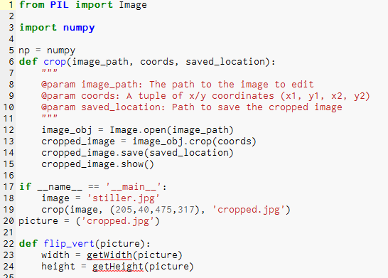
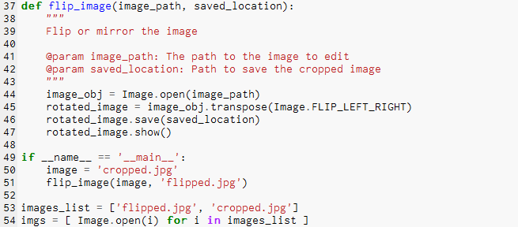
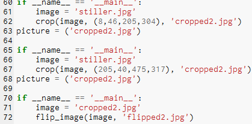
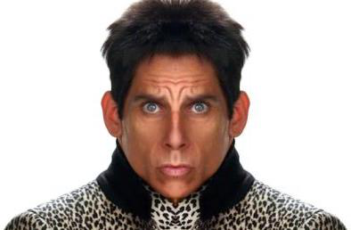
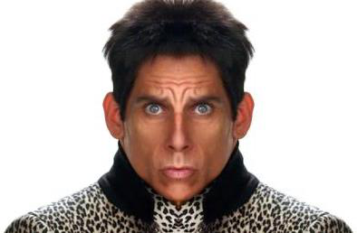

The next project in python was the modification of a picture in some way. My partner noah and I took a picture of Ben Stiller, cropped his face in half and mirored it in order to make his face look symmetrical, we did this with both sides. In total this took about 6 functions to accomplish what we wanted, we had to crop the image, flip it, then place it next to the original, we had todo this twice.
  After these converions the original image differed greatly as you can see below
 
